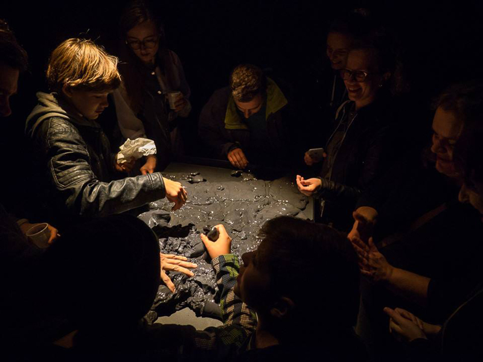
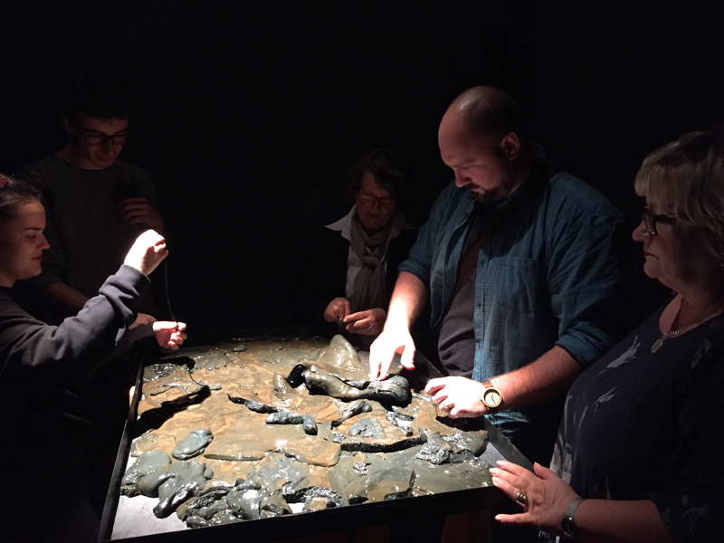
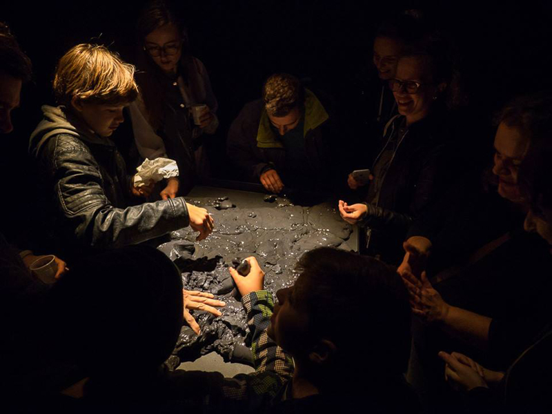
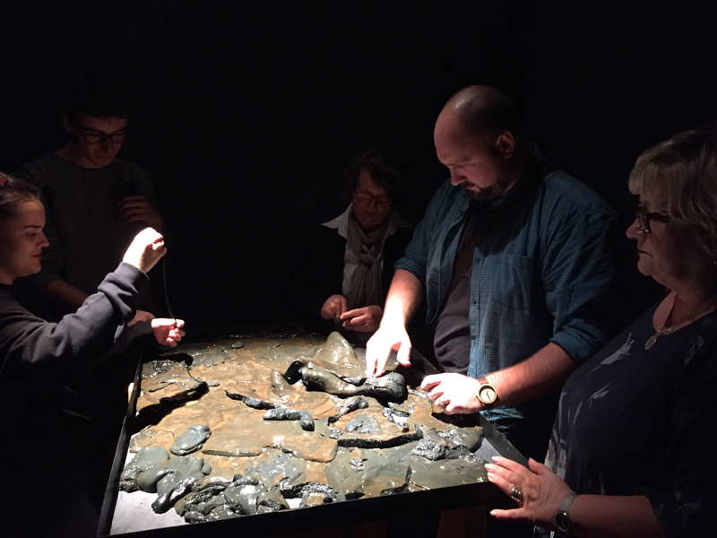

Black Trough, 2017 (in collaboration with Ana Sladetić, PhD, a Croatian contemporary artist). Installation, 100 x 75 x 110 cm
Dark matter is an invisible and hypothetical form of matter that does not interact with light or other electromagnetic radiation. It is one of the greatest mysteries in astrophysics today. Although it has never been directly observed, scientists have inferred its existence from gravitational effects, such as the motion of visible matter (stars, gas, dust), the "bending" of light as it travels through space (gravitational lensing), its impact on large structures like galaxy clusters, and its imprint on the cosmic microwave background (CMB). Dark matter is present throughout the universe, surrounding and passing through everything we can detect with our eyes or instruments.
The installation Black Trough explores the idea of dark matter from an artistic perspective. Using a particular type of fluid, it evokes the invisible presence of dark matter as it weaves through galaxies, stars, and all detectable matter.
Fluids are generally classified as either Newtonian or non-Newtonian. A Newtonian fluid has a constant viscosity (resistance to flow), regardless of the force applied to it. In simple terms, if you stir it faster, it flows faster—but its thickness stays the same. Water, air, and many light oils are examples.
In contrast, a non-Newtonian fluid changes its viscosity depending on the force applied. The fluid used in Black Trough is non-Newtonian and was chosen to symbolically represent dark matter because of its responsive nature. When a small force is applied, it behaves like a thick, viscous material. As the force increases, it becomes less viscous and flows more freely. Visitors are encouraged to interact with it by touching it or placing objects on its surface—to e